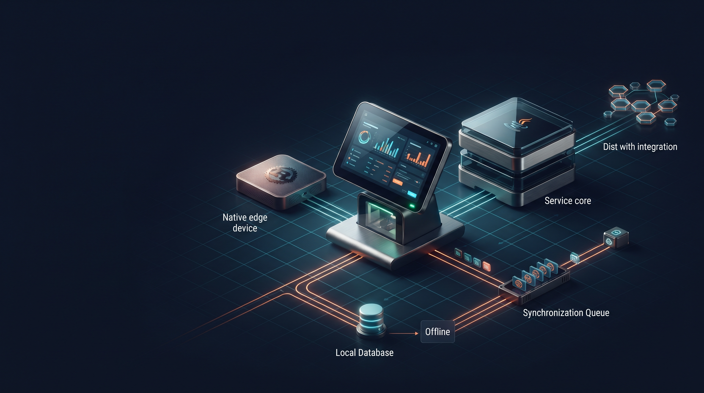

O Próximo Balcão: Java, Rust e a Continuidade do Cara Core PDV
Do balcão à nuvem, do código à regra,
a escolha de arquitetura precisa ter um chão e um norte.
Java sustenta a dor e a regra do negócio,
Rust guarda a borda e o ritmo do sistema local.
O amanhã não vem por milagre de linguagem,
vem da experiência que aprendeu a medir o peso da operação.
O balcão não espera a nuvem
Um ponto de venda precisa responder no momento em que a venda acontece. O operador não pode transformar uma queda de internet em uma reunião de arquitetura. O cliente não deveria descobrir a topologia do sistema quando está esperando o troco.
Por isso, a visão do Cara Core PDV parte de uma preocupação simples: a operação local deve continuar útil, rápida e compreensível, mesmo quando a conectividade estiver instável. A nuvem pode participar da integração, mas não precisa ser o único lugar onde o negócio consegue funcionar.
Java e Rust com responsabilidades claras
A escolha tecnológica não é uma disputa de torcida. Java pode sustentar serviços, regras de negócio, integração, APIs, observabilidade e processos corporativos. Rust pode participar de componentes locais que exigem baixo consumo, desempenho, distribuição simples e controle próximo do sistema operacional.
Domínio do produto: preços, estoque, pagamentos e documentos.
Integração: sincronização, eventos e conciliação.
Governança: configuração, auditoria e versões de regra.
Essa divisão é uma direção arquitetural, não uma promessa de que todos os componentes já estejam prontos ou de que uma linguagem resolva sozinha os problemas do negócio.
Preparar o produto para mudar
A experiência com automação fiscal mostra por que regras precisam ser versionadas. Um PDV preparado para os próximos anos deve conseguir atualizar parâmetros, registrar a vigência usada em cada operação e explicar como chegou ao resultado. Isso é especialmente importante quando o ambiente tributário passa por transição.
- Regra fiscal deve ser configurável e rastreável.
- Documento deve manter a versão da decisão aplicada.
- Operação offline deve registrar eventos para sincronização posterior.
- Falhas de integração devem ser visíveis, não silenciosas.
- O produto deve evoluir sem exigir que o cliente reconstrua sua história.
Uma história que continua
A experiência de 2019, a demonstração histórica do PDV e a arquitetura atual não são episódios soltos. Eles formam uma linha de aprendizagem: primeiro, entender regras e dados; depois, transformar entendimento em produto; por fim, construir uma base que possa acompanhar mudanças sem abandonar a operação.
Essa é a bagagem que a Cara Core leva para os próximos anos. Não a promessa de que tudo está resolvido, mas a capacidade de observar o problema, documentar o que existe e construir o próximo passo com honestidade técnica.
Fecho da série
A linha entre VBA, automação fiscal, produto próprio e arquitetura futura não é uma fuga da origem; é a confirmação de que a experiência prática e a engenharia responsável se alimentam mutuamente. O PDV continua sendo, antes de tudo, um sistema para a operação real — e é aí que a próxima arquitetura deve se apoiar.
Hashtags
Contato
- Site institucional: www.caracore.com.br
- Ecossistema: www.caracore.com.br/ecosistema.html#roadmap
- E-mail: suporte@caracore.com.br
- LinkedIn: Cara Core Informática
A próxima etapa não nasce de hype, mas de clareza técnica, limites bem definidos e confiança do cliente.
Artigo publicado em 5 de julho de 2027
© 2027 Cara Core Informática. Todos os direitos reservados.